Arquitetura Medallion para Processamento em Tempo Real
graph LR
subgraph Ingestao
API[FastAPI] --> Kafka[Kafka Topic: cotacoes]
end
subgraph "Processamento Spark (Medallion)"
Kafka --> Bronze[Camada Bronze: RAW]
Bronze --> Silver[Camada Silver: Refined]
Silver --> Gold[Camada Gold: Aggregated]
end
subgraph Armazenamento
Bronze & Silver & Gold --- MinIO[(MinIO / S3)]
end
subgraph Analise
MinIO --- Trino[Trino SQL]
end
Siga os passos abaixo para garantir a integridade dos dados no seu laboratório.
./reset_pipeline.sh
./start_pipeline.sh
Comandos essenciais para validar o Medallion e coletar dados para o TCC.
-- Criar os esquemas
CREATE SCHEMA IF NOT EXISTS delta.bronze;
CREATE SCHEMA IF NOT EXISTS delta.silver;
CREATE SCHEMA IF NOT EXISTS delta.gold;
-- Registrar as tabelas
CALL delta.system.register_table(schema_name => 'bronze', table_name => 'cotacoes', table_location => 's3a://datalake/bronze/cotacoes');
CALL delta.system.register_table(schema_name => 'silver', table_name => 'cotacoes', table_location => 's3a://datalake/silver/cotacoes');
CALL delta.system.register_table(schema_name => 'gold', table_name => 'media_precos_5min', table_location => 's3a://datalake/gold/media_precos_5min');
SELECT 'Bronze' as camada, count(*) as total FROM delta.bronze.cotacoes
UNION ALL
SELECT 'Silver' as camada, count(*) as total FROM delta.silver.cotacoes;